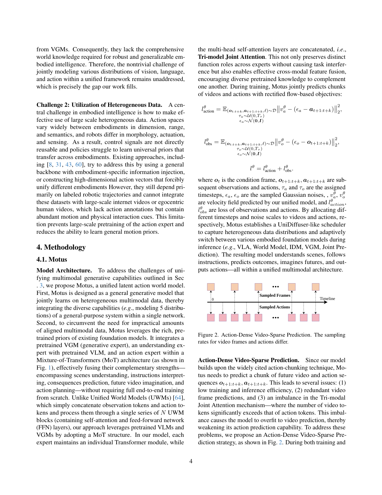
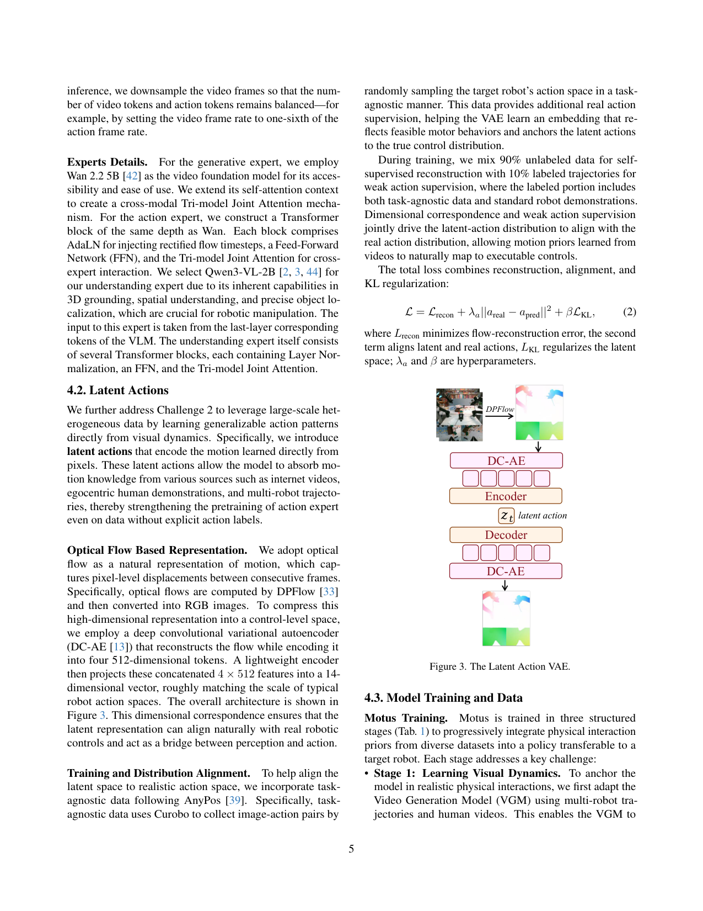
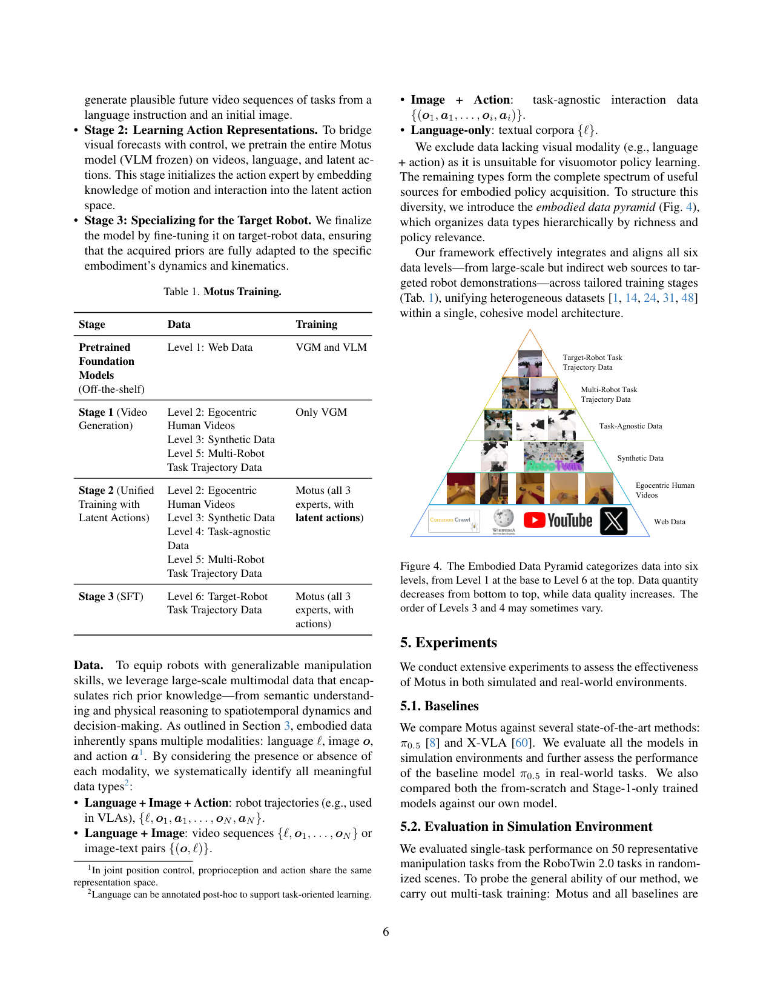
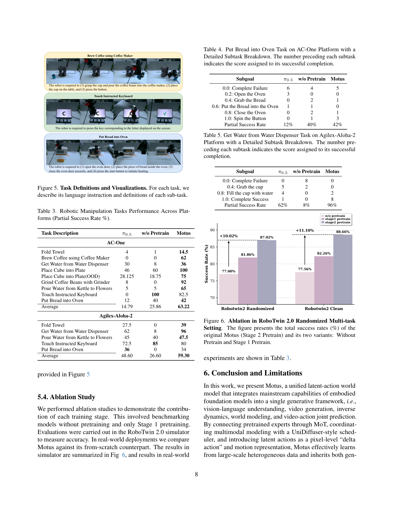
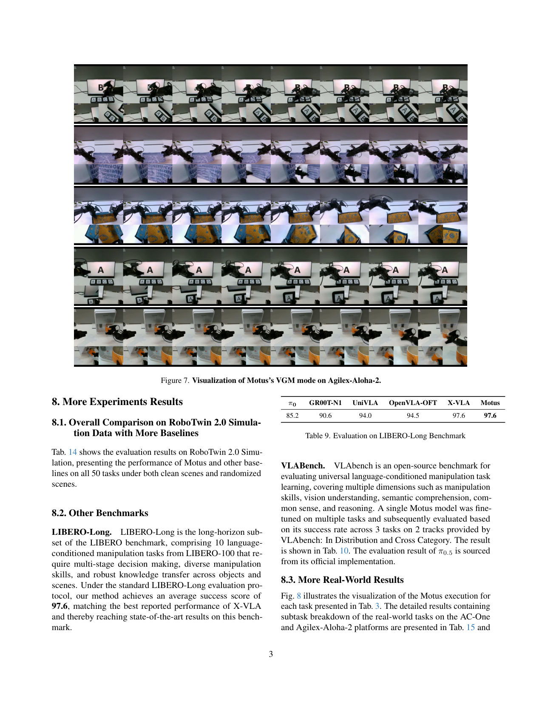
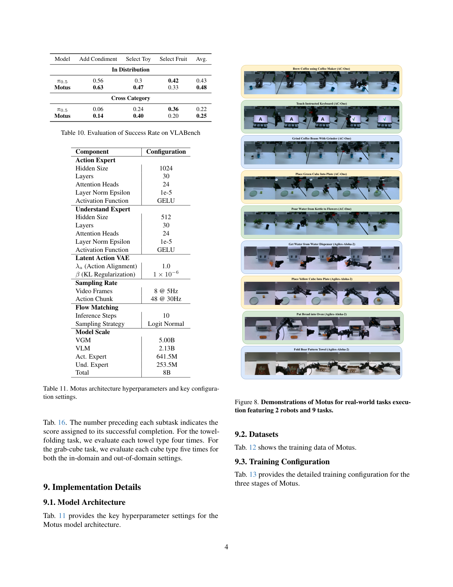
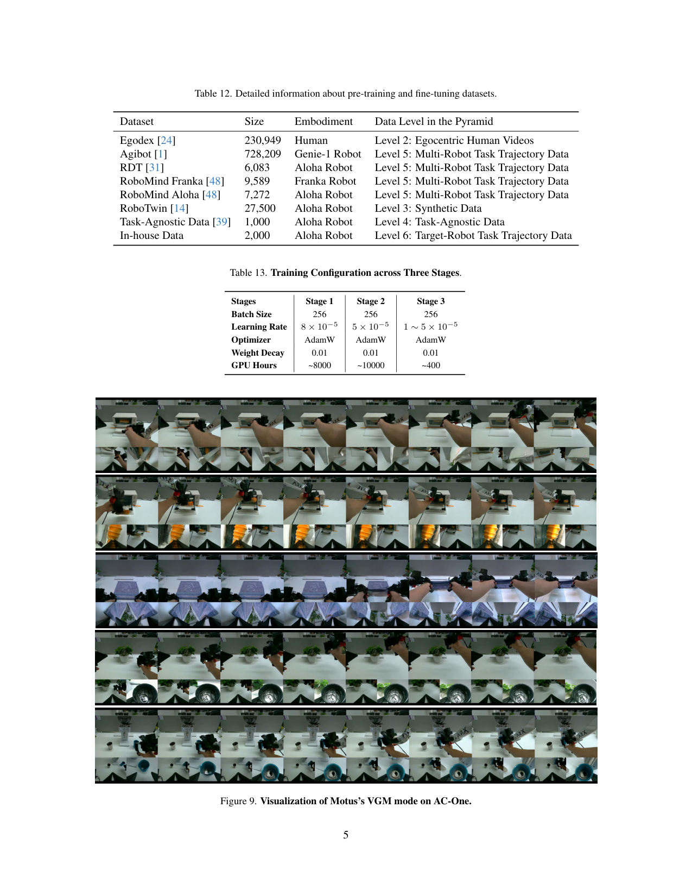
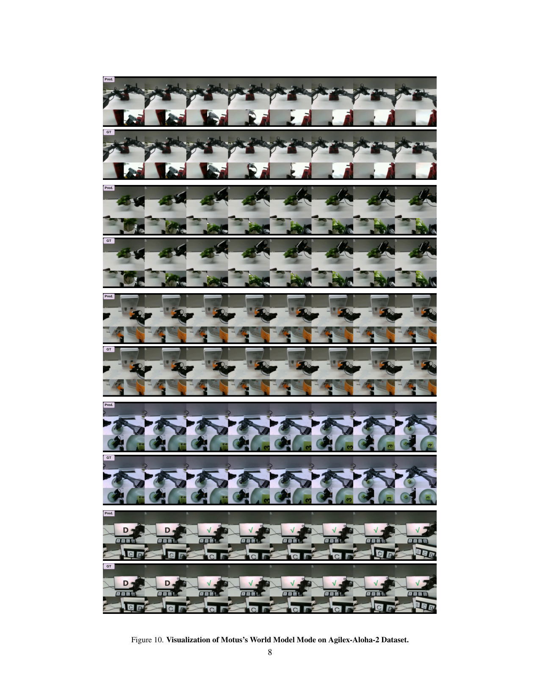
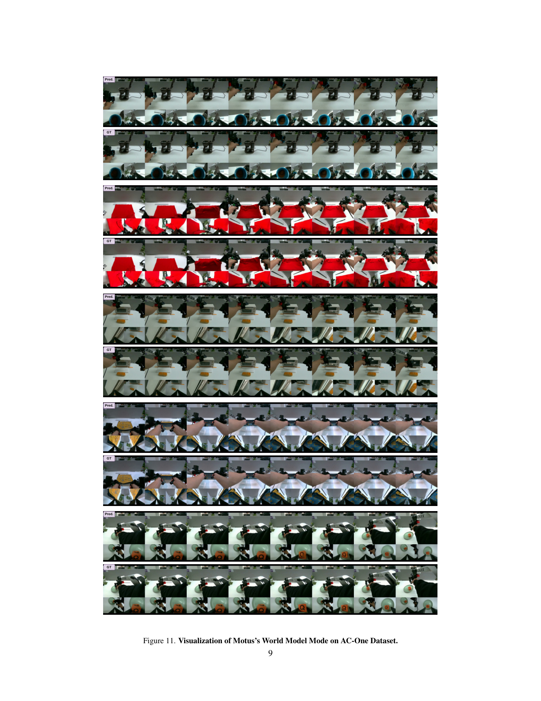
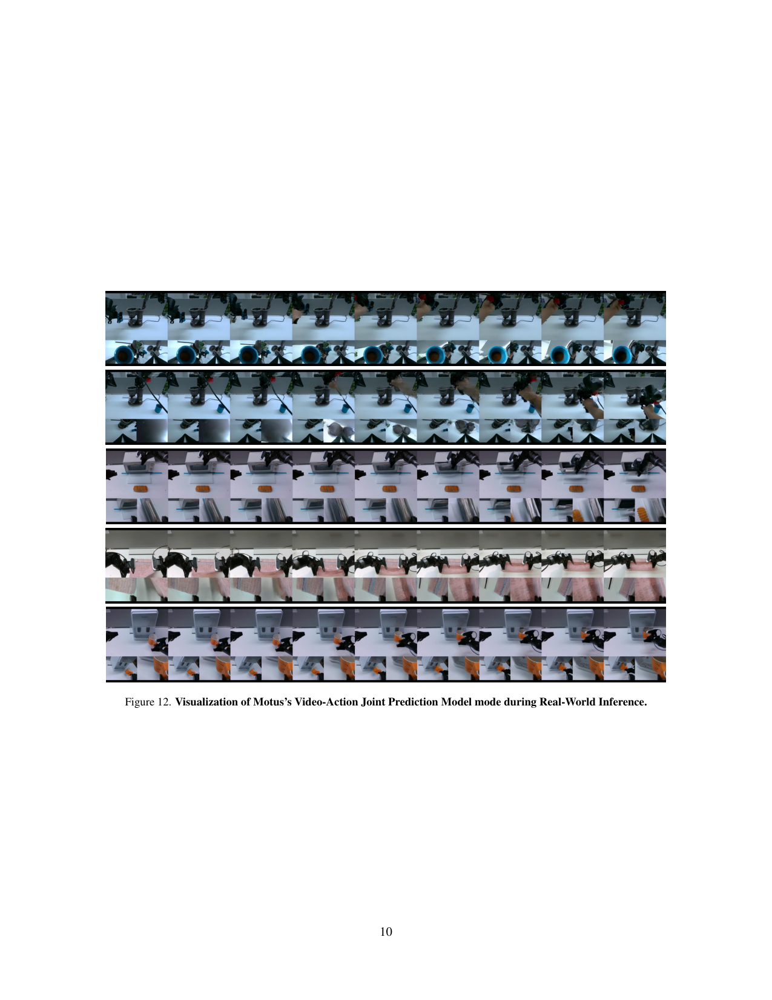

用一个 Mixture-of-Transformers 把 VLM(理解)、Wan2.2(视频生成)、Action 专家三路并到一个模型里,靠 UniDiffuser 式调度在 VLA/WM/IDM/VGM/Video-Action 联合预测五种模式间切换;并用光流编码的 latent action 让无动作标签的海量视频也能预训练 action 专家。
问题
要解决什么：具身智能被人为切成五块独立建模——VLA、世界模型(WM)、逆向动力学(IDM)、视频生成(VGM)、Video-Action 联合预测——每块各训各的,既无法共享先验又无法吃异构数据。Motus 要把五块统一进一个生成式模型,同时解决'无动作标签的互联网视频/人类视频无法用来预训练 action 专家'这第二难题。
为什么 prior work 不够：UWM(Unified World Models)是理论原型,但它要么从头训、要么用小底座,要么缺 VLM 的视觉语言理解先验、要么缺 VGM 的物理交互先验。F1 把 VLA 和 IDM 拼起来,但排除了世界模型/视频生成,统一不完整。Latent action 一脉(LAPA/AdaWorld)用 RGB 重建或 β-VAE,引入了任务无关的外观噪声,且没法直接对齐真实控制信号。
输入 / 输出
输入
| 名称 | 类型 | 说明 |
|---|---|---|
| current observation o_t | image/video | 条件帧,经 VAE 编码到 latent(来源 Wan2.2-VAE) |
| future observations o_{t+1:t+k} | video latents | 要预测/去噪的未来视频帧 latent(部分模式作条件,部分模式作输出) |
| future actions a_{t+1:t+k} | latent action | 动作 chunk;预训练期是光流编码的 latent action,微调期是真实动作 |
| language instruction ℓ | text | 经 VLM 理解专家(Qwen3-VL-2B 末层 token)处理 |
| proprioception p | vector | 本体感受;论文注脚指明在 joint position 控制下与 action 同表示空间 |
输出
| 名称 | 类型 | 说明 |
|---|---|---|
| future video latents o_{t+1:t+k} | latent | 去噪后的未来视频帧(VGM/WM/Joint 模式产出) |
| action chunk a_{t+1:t+k} | continuous | RoboTwin: chunk=16;真机 AC-One/Agilex-Aloha-2: chunk=48 @30Hz;latent action 阶段输出 14 维 |
控制频率：动作 30Hz,chunk=48 步(1.6s);视频采样降到 5Hz、每 chunk 8 帧视频(action-dense video-sparse,视频率是动作率的 1/6);推理 10 步 flow matching
输入拼接 protocol
<bos_cond>[ VAE(o_t) ]<eos_cond><bos_lang>[ VLM_last_layer(ℓ) ]<eos_lang><bos_video>[ noisy o^τo_{t+1:t+k} (8帧@5Hz) ]<eos_video><bos_action>[ noisy a^τa_{t+1:t+k} (48步@30Hz, 或 latent action 14维) ]<eos_action>
逐 token 解释:三个坑:
1) language 不进序列拼接,是 VLM 专家→共享 attention 注入,这点和 DreamZero 的 cross-attention 注入思路一致,但 Motus 走的是 Mixture-of-Transformer 共享自注意力层(Tri-model Joint Attention),不是单 DiT 加 cross-attn。
2) video 和 action 在同一条去噪序列里,但被分配不同 timestep(τo、τa 独立从 U(0,Tτ) 采)——这是 UniDiffuser 式调度的核心,五种模式靠 (τo, τa) 的起止值切换:都从 Tτ 降就是 Joint/VLA,video 保持 Tτ 不动只去噪 action 就是 VLA/IDM,action 保持 0 不动只去噪 video 就是 VGM/WM。
3) 训练和推理序列结构相同,但模式不同时哪些 token 真正被去噪、哪些只做条件不同:训练时五种模式数据混合统一训;推理时按目标固定 (τo, τa) 起止即可切换。多视角未在文中显式处理(真机为单视角双臂)。
数据集
| 数据 | 规模 | 备注 |
|---|---|---|
| Egodex(ego-centric human) | 230,949 段 | Level 2 人类第一视角视频,无动作标签,Stage1/2 用 |
| Agibot World Colosseo | 728,209 段 | Level 5 Genie-1 机器人轨迹,多机器人任务数据 |
| RDT 数据 | 6,083 段 | Level 5 Aloha 机器人轨迹 |
| RoboMind Franka | 9,589 段 | Level 5 Franka 机器人轨迹 |
| RoboMind Aloha | 7,272 段 | Level 5 Aloha 机器人轨迹 |
| RoboTwin 2.0 | 27,500 段 | Level 3 合成数据,强 domain randomization,用于 RoboTwin 评测(50 任务) |
| AnyPos task-agnostic | 1,000 段 | Level 4 Curobo 随机采样的图像-动作对,锚定 latent action 到真实控制分布 |
| In-house target-robot | 2,000 段 | Level 6 目标机器人(真机)轨迹,Stage3 SFT 用,每任务 100 轨迹 |
架构（摘要）
主干与结构
backbone：Wan2.2-TI2V-5B(video generation expert,5B dense)+ Qwen3-VL-2B(understanding expert,2.13B)+ 自建 Action Expert(641.5M)+ Understanding projection expert(253.5M)
参数：总计 ~8B(Table 11:VGM 5.00B / VLM 2.13B / Action Expert 641.5M / Und. Expert 253.5M)
类型：Mixture-of-Transformers (MoT) + UniDiffuser-style rectified flow 调度,五模式统一生成式建模
关键组件
- Video Generation Expert:Wan2.2-TI2V-5B,自带 VAE(Wan2.2-VAE)编码视频→latent,rectified flow 去噪未来视频
- Understanding Expert:Qwen3-VL-2B 末层 token 出来,经 30 层 Transformer(hidden 512, 24 heads)处理,负责场景/指令理解
- Action Expert:30 层 Transformer(hidden 1024, 24 heads),与 Wan 同深度,每块含 AdaLN(注 τ)、FFN、Tri-model Joint Attention
- Tri-model Joint Attention:三个专家各自维护独立 Transformer 模块,但多头自注意力层共享拼接——cross-modal 融合靠这一层,而不是拼 token
- UniDiffuser-style scheduler:给 video 和 action 分别分配 timestep τo、τa,通过 (τo, τa) 的起止值切换五种推理模式
- Latent Action VAE:DC-AE 重构光流(RGB),编码成 4×512 token,轻量 encoder 再压到 14 维,对齐真实动作尺度
为什么这样设计
不是简单把 observation token 和 action token 串成一个 transformer(UWM 那样),而是让三个专家各自保留独立 Transformer 模块——保住预训练先验不被互相稀释(UWM 从头训会丢 VLM/VGM 先验);但共享多头自注意力层(Tri-model Joint Attention)做跨模态融合。UniDiffuser 式调度让一个模型就能覆盖五种分布,不需要五个 head。latent action 用光流而不是 RGB 重建,是为了剥掉任务无关的外观信息、把'像素级 delta action'作为跨本体通用语言。
数值 sense
| 项 | 值 |
|---|---|
| DiT 规格 | 三个专家各自规格:Action Expert hidden=1024, 30 layers, 24 heads, GELU;Understanding projection hidden=512, 30 layers, 24 heads;VGM = Wan2.2-5B(原生 dense DiT)。三专家通过共享 self-attention 耦合,不是单一 DiT 参数量简单相加。 |
| 分辨率 | Wan2.2 原生支持 720P@24fps;Motus 训练把视频采样降到 5Hz、每 chunk 8 帧视频(action-dense video-sparse),具体像素分辨率论文未给(沿用 Wan2.2 配置,面积固定宽高比跟输入) |
| VAE | Wan2.2-VAE:空间 16× 下采样,时间 4× 下采样(压缩比 T×H×W = 4×16×16),latent channel=16;外加 patchification 层后总压缩比 4×32×32。注:MOTUS 用此 VAE 编码 video latent。 |
| 每帧 latent 维 | Wan2.2-VAE 单帧 latent 通道 16;具体 H×W 取决于输入分辨率,720P 输入下空间维 ~40×22 量级 → 每帧 latent ~1.4e4 维(远小于 Wan2.1 14B 的 1e5,因 Wan2.2-VAE 空间压缩更狠 16× vs 8×) |
| Chunk | Video:8 帧 @5Hz = 1.6s;Action:48 步 @30Hz = 1.6s。视频率刻意压成动作率的 1/6(action-dense video-sparse),让 video token 数和 action token 数平衡,避免 video 主导 attention。 |
| 上下文 | 条件帧仅当前 o_t(单帧);不显式建模长历史 chunk(区别于 DreamZero 的 M=4 chunk 6.6s 上下文),历史信息依赖 VLM 理解专家的隐式记忆 |
| 动作 | Stage2 预训练:14 维 latent action(光流 VAE 编码,跨本体通用);Stage3 SFT:真实机器人动作(AC-One / Agilex-Aloha-2 双臂);RoboTwin 评测用 chunk=16,真机用 chunk=48 |
| 训练 | 三阶段:Stage1 video pretrain(~8000 GPU·h)只动 VGM;Stage2 unified training with latent actions(~10000 GPU·h,全三专家,VLM 冻结);Stage3 SFT on target robot(~400 GPU·h)。三阶段都是 batch 256,AdamW,lr 8e-5→5e-5→1~5e-5。Flow matching 推理 10 步,Logit Normal 采样,总训练约 18400 GPU·h。 |
→ 详见 Architecture tab。
关键结果
| 指标 | 值 | 最强 baseline | setup |
|---|---|---|---|
| RoboTwin 2.0 Randomized 50-task avg success | 87.02% | π0.5 43.84% / X-VLA 72.84% / from-scratch 77.00% | 50 任务多任务联合训,40k finetune steps,Randomized 场景(背景/桌面/光照随机) |
| RoboTwin 2.0 Clean 50-task avg success | 88.66% | π0.5 42.98% / X-VLA 72.80% / from-scratch 77.56% | 同上但 Clean 场景;论文 abstract 称对 X-VLA +15%、对 π0.5 +45% |
| LIBERO-Long avg score | 97.6 | X-VLA 97.6 / OpenVLA-OFT 94.5 / π0 85.2 | 10 个长程任务,追平 SOTA |
| AC-One 真机 9 任务 partial success avg | 63.22% | π0.5 14.79% / w/o-pretrain 25.86% | 双臂 AC-One,长程多子任务,partial success rate |
| Agilex-Aloha-2 真机 5 任务 partial success avg | 59.30% | π0.5 48.60% / w/o-pretrain 26.60% | 双臂 Agilex-Aloha-2 |
| IDM mode action MSE (RoboTwin) | 0.014 | ResNet18+MLP 0.044 / DINOv2+MLP 0.122 | 100 样本,chunk=16;Motus 在 IDM 模式打败专门训的 IDM |
| VLA mode vs Joint mode (RoboTwin) | VLA 83.90% / Joint 87.02% | — | 同一权重切模式,Joint 模式略优,证明联合预测比纯 VLA 更强 |
| World Model mode 生成质量 (Agilex) | FID 9.46 / FVD 49.28 / SSIM 0.886 | AC-One FID 12.96 / FVD 73.13 | 真机数据,给定动作预测未来视频 |
Insights
- 五模式统一指给两个模态各分配独立 timestep,用 (τo, τa) 的起止值切换模式——这是 UniDiffuser 思想在机器人上的落地。一个权重,五种推理行为(p13-14 Algorithm 2-6)。
- action 专家终于能预训练了。过去 VLA 的 action 部分只能从有标签机器人数据学,互联网视频用不上;Motus 用光流编码成 latent action,让海量无标签视频也能喂 action 专家,这是它相对 VLA 路线的根本增量(p5)。
- action-dense video-sparse 是个反直觉但关键的工程:压低 video 帧率不是为省算力,是为让 action token 不被 video token 淹没在 attention 里(p4)。
- 统一模型不一定输专门模型:MOTUS 在 IDM 模式 action MSE 0.014,打败专门训的 ResNet18+MLP(0.044)和 DINOv2+MLP(0.122)(p14 Table 7)。说明共享权重带来的先验 > 专门优化的独立模型。
- Joint 模式(87.02%)略胜 VLA 模式(83.90%):把 video 也一起生成,反而让 action 更准(p14 Table 8)。这给 DreamZero 式 WAM 的'联合生成优于纯 policy'论断添了正面证据。
vs 同类工作
- vs UWM(Unified World Models):UWM 是单 transformer 串 token、从头训,缺 VLM/VGM 先验;Motus 是 MoT 三专家保留各自预训练先验,只共享 attention,且能用互联网视频预训练 action 专家。
- vs DreamZero:两者都做 video-action 联合生成,但 DreamZero 是单一 AR DiT 共享 timestep 联合去噪、KV-cache 闭环;Motus 是三专家 MoT、video/action 各自独立 timestep、UniDiffuser 调度切换五模式。DreamZero 重实时(7Hz),Motus 重统一性(五模式)和跨本体数据利用。
- vs F1:F1 把 VLA 和 IDM 拼起来,但排除 WM/VGM;Motus 把五种全统一,且能用 latent action 预训练 action 专家,F1 不涉及 latent action。
- vs LAPA/AdaWorld(latent action 一脉):LAPA 用 RGB 重建引入外观噪声,AdaWorld 用 β-VAE 解耦;Motus 用光流(天然剥外观),且 14 维对齐机器人动作尺度,直接锚到可执行控制分布。
- vs Bagel(统一理解+生成):Bagel 是两专家(Understanding+Generation)MoT;Motus 把这套扩展到机器人,加 Action 专家变三专家,并引入 latent action 解决动作标签稀缺。
局限
- 论文自承(Conclusion + 未来工作):仍是 System 1,长程推理能力受限于上下文;未来要探索更先进的统一架构和更通用的运动先验(p8)。
- 论文自承:要从互联网规模通用视频学 latent action,目前还没做到(p8 'learn latent actions from internet-scale general videos')——当前 latent action 预训练主要在 ego-centric human + 多机器人数据上。
- 我们读出:上下文建模很弱——只条件当前帧 o_t,不像 DreamZero 有 6.6s 历史记忆;长程任务的'记忆'实际靠 VLM 理解专家隐式承担,论文未量化这部分贡献。
- 我们读出:真机 baseline 只比 π0.5,没和 DreamZero/GR00T N1.6/X-VLA 真机直接对照;π0.5 在某些任务(如 Touch Keyboard Agilex 72.5%)本身不弱,Motus 在 Put Bread into Oven(Agilex 34% vs π0.5 36%)甚至略输,泛化收益不均匀。
- 我们读出:latent action 的 14 维是经验设定,'roughly matching typical robot action spaces',没有理论保证这维度足以表达所有运动;不同本体(7-DOF Franka vs 双臂)动作维度差异大,14 维是否够用未充分讨论。
- 我们读出:Stage2 unified training 用的是 latent action,Stage3 SFT 才换真实动作——这中间有个'latent action → real action'的迁移跳跃,论文没给这个跳跃单独的消融(只给了 w/o-pretrain / stage1 / stage2 三档),Stage3 的真实动作微调对最终增益的贡献未被独立量化。
- 我们读出:五种模式的实验密度不均——Joint/VLA/IDM/WM 都有量化,VGM 只有可视化无定量;统一模型的'每种模式都强'这一卖点的证据强度不齐。
可复现性
- code：https://motus-robotics.github.io/motus(项目页,代码权重逐步释放)
- weights：Wan2.2-TI2V-5B / Qwen3-VL-2B 公开底座;Motus 自身权重论文未明确开源时间
- sim_benchmark：RoboTwin 2.0(50 任务,Clean+Randomized)、LIBERO-Long、VLABench
- real_eval：AC-One 双臂 + Agilex-Aloha-2 双臂,9+5 个长程任务,partial success rate
Motus 架构详解
> 配套 card.json。先用 Mermaid 把三专家 MoT 数据流和五模式切换画清，再逐组件讲透。所有数字都来自论文 Table 11/13 或 Wan2.2 公开 model card（标注出处）。
1. 总体数据流：Mixture-of-Transformers 三专家
flowchart LR
subgraph Inputs
O["当前观测 o_t"]
L["语言指令 ℓ"]
OV["未来视频帧 o_{t+1:t+k}"]
AV["动作 chunk a_{t+1:t+k}"]
end
subgraph Encoders
VAE["Wan2.2-VAE<br/>(空间16× 时间4× ch=16)"]
VLM["Qwen3-VL-2B<br/>(冻结)→末层 token"]
AE["Action Encoder<br/>(latent action VAE, 14维)"]
end
subgraph TriModelJointAttention["Tri-model Joint Attention（共享多头自注意力）"]
VE["Video Gen Expert<br/>Wan2.2-5B<br/>独立 QKV/FFN/AdaLN"]
UE["Understanding Expert<br/>30层 hidden512/24h<br/>独立 QKV/FFN"]
AXE["Action Expert<br/>30层 hidden1024/24h<br/>独立 QKV/FFN/AdaLN"]
end
subgraph Decoders
VD["Video Decoder<br/>VAE latent→frame"]
AD["Action Decoder<br/>latent→48步连续动作"]
end
O --> VAE --> VE
OV --> VAE --> VE
L --> VLM --> UE
AV --> AE --> AXE
VE <-->|共享 self-attn| UE
UE <-->|共享 self-attn| AXE
VE <-->|共享 self-attn| AXE
VE --> VD
AXE --> AD关键：三个专家各自保留独立 Transformer 模块（独立 QKV/FFN/AdaLN），只在多头自注意力层做共享拼接。这是 Mixture-of-Transformers（MoT）的核心——不拼 token，而是拼 attention。这样：
- 各专家的预训练先验不被互相稀释（VLM 不被 action 训练破坏，VGM 不被理解任务带偏）。
2. UniDiffuser 式调度：一个权重切换五模式
flowchart TB
Start["输入 o_t, ℓ + 可选 a_{t+1:t+k}"]
Start --> Choice{"选择模式"}
Choice -->|"VGM<br/>p(o|o_t,ℓ)"| M1["τo: Tτ→0 去噪<br/>τa: Tτ 不动(纯噪声)"]
Choice -->|"WM<br/>p(o|o_t,a)"| M2["τo: Tτ→0 去噪<br/>τa: 0 干净(动作作条件)"]
Choice -->|"IDM<br/>p(a|o_t:o_t+k)"| M3["τo: 0 干净(视频作条件)<br/>τa: Tτ→0 去噪"]
Choice -->|"VLA<br/>p(a|o_t,ℓ)"| M4["τo: Tτ 不动(纯噪声)<br/>τa: Tτ→0 去噪"]
Choice -->|"Joint<br/>p(o,a|o_t,ℓ)"| M5["τo: Tτ→0 去噪<br/>τa: Tτ→0 去噪"]
M1 --> Same["同一权重 Model_θ<br/>10步 rectified flow"]
M2 --> Same
M3 --> Same
M4 --> Same
M5 --> Same
Same --> Out["对应模式的去噪输出"]机制（p13-14 Algorithm 2-6）：rectified flow 插值路径 x_τ = (1-τ)x_0 + τ·ε。τ=0 是干净、τ=Tτ 是纯噪声。
- 把某模态固定在 τ=0 → 作条件（不生成）
五种模式 = (τo 起止, τa 起止) 的不同组合。训练时五种数据混合统一训，推理时按目标固定 (τo, τa) 起止即可切换。这是 UniDiffuser"一个模型表达边际/条件/联合分布"思想在机器人五模式上的落地。
3. 输入/输出契约
| 方向 | 名称 | 类型 | 说明 |
|---|---|---|---|
| 输入 | 条件帧 o_t | video latent | Wan2.2-VAE 编码，五模式共用 |
| 输入 | 语言 ℓ | text | VLM 理解专家处理，cross-expert attention 注入 |
| 输入 | 未来视频 o_{t+1:t+k} | video latent | 8 帧 @5Hz；部分模式作条件，部分作输出 |
| 输入 | 动作 chunk | latent/continuous | 48 步 @30Hz；Stage2 是 14 维 latent action，Stage3 是真实动作 |
| 输出 | 未来视频 latent | latent | VGM/WM/Joint 产出 |
| 输出 | 动作 chunk | continuous | VLA/IDM/Joint 产出；RoboTwin chunk=16，真机 chunk=48 |
4. 数值 sense：模型到底多大
| 项 | 值 | 出处 |
|---|---|---|
| DiT 规格 | Action Expert hidden=1024, 30 layers, 24 heads, GELU；Und. projection hidden=512, 30 layers, 24 heads；VGM=Wan2.2-5B dense DiT | 论文 Table 11 |
| 总参数 | ~8B（VGM 5.00B + VLM 2.13B + Action 641.5M + Und. 253.5M） | 论文 Table 11 |
| 分辨率 | Wan2.2 原生 720P@24fps；Motus 训练视频降到 5Hz、每 chunk 8 帧 | Wan2.2 HF card / 论文 Table 11 |
| VAE | Wan2.2-VAE：空间 16× 下采样，时间 4×（压缩比 T×H×W=4×16×16），latent channel=16；加 patchification 后总 4×32×32 | Wan2.2 HF card |
| 每帧 latent 维 | Wan2.2-VAE 单帧通道 16；720P 输入下空间维 ~40×22 → 每帧 ~1.4e4 维 | 推算 |
| Chunk | Video 8 帧 @5Hz = 1.6s；Action 48 步 @30Hz = 1.6s | 论文 Table 11 |
| 上下文 | 仅当前帧 o_t（不显式长历史） | 论文 method |
| 动作 | Stage2: 14 维 latent action；Stage3: 真机动作（AC-One/Agilex 双臂）；RoboTwin chunk=16，真机 chunk=48 | 论文 Table 11 |
| 训练 | Stage1 ~8000 GPU·h；Stage2 ~10000 GPU·h；Stage3 ~400 GPU·h；总 ~18400 GPU·h。batch 256, AdamW, lr 8e-5→5e-5→1~5e-5 | 论文 Table 13 |
| 推理 | 10 步 flow matching，Logit Normal 采样 | 论文 Table 11 |
注意 Wan2.2-VAE vs Wan2.1-VAE 的差异：Wan2.1（DreamZero 用的）是空间 8× 时间 4×，channel 16；Wan2.2 是空间 16× 时间 4×，channel 16。Wan2.2 空间压缩更狠（16× vs 8×），所以单帧 latent 维更小，但 patchification 层会把 token 数再降。Motus 选 Wan2.2-5B 而非 Wan2.1-14B，主要为了"accessibility and ease of use"（论文 p5 原话），用更小底座换取易部署。
5. Latent Action VAE：光流 → 14 维跨本体动作
flowchart LR
F1["帧 o_t"] --> DP["DPFlow<br/>光流估计"]
F2["帧 o_{t+1}"] --> DP
DP --> RGB["光流→RGB 图"]
RGB --> DCAE_E["DC-AE Encoder<br/>(深度压缩自编码器)"]
DCAE_E --> LAT["4 × 512 token"]
LAT --> LE["轻量 Encoder<br/>(MLP)"]
LE --> ZA["latent action z_a<br/>14 维"]
ZA --> DCAE_D["DC-AE Decoder"]
DCAE_D --> RECON["重建光流<br/>(自监督)"]
ZA -.弱监督.-> ALIGN["||a_real - a_pred||²<br/>(10% 有标签数据)"]为什么用光流不用 RGB（p5）：
- 光流是"像素级位移"，天然剥掉外观只留运动 → 跨本体通用（人/机器人/不同构型都产生光流）。
14 维的对齐技巧：DC-AE 编码出 4×512 token，轻量 encoder 压到 14 维，"roughly matching typical robot action spaces"——让 latent action 的尺度直接对齐真实机器人动作，这样 Stage3 SFT 时 latent→real 的迁移跳跃最小。
训练配比：90% 无标签数据自监督重建光流 + 10% 有标签（task-agnostic Curobo 数据 + 真机示教）弱监督对齐。loss = L_recon + λa·||a_real - a_pred||² + β·L_KL，λa=1.0, β=1e-6（Table 11）。
6. Action-Dense Video-Sparse：为什么把视频率压到 1/6
action chunking 下默认 video 帧数 >> action 步数（8 video 帧 vs 48 action 步，看似已经平衡，但 video 每帧 latent 是 ~1.4e4 维，action 每步是 14 维，token 维度悬殊导致 attention 被 video 主导）。
论文的解法（p4 Figure 2）：把视频采样率压成动作率的 1/6（video 5Hz / action 30Hz），让两类 token 在 attention 里数量平衡。这同时解决了三个问题：
1. 训练推理效率低
2. video 帧冗余
3. Tri-model Joint Attention 里 video token 淹没 action token
7. 三阶段渐进训练
flowchart LR
S1["Stage1: Video Pretrain<br/>~8000 GPU·h<br/>只动 VGM<br/>Level2-3 数据"]
S1 --> S2["Stage2: Unified Training<br/>~10000 GPU·h<br/>三专家全开(VLM冻结)<br/>用 latent action<br/>Level2-5 数据"]
S2 --> S3["Stage3: SFT<br/>~400 GPU·h<br/>latent→real action<br/>Level6 真机数据<br/>每任务100轨迹"]
S3 --> Final["最终模型<br/>(三种推理模式可用)"]渐进逻辑：
- Stage1 先把 VGM 在多机器人+人类视频上适应，让视频生成模型"见过"机器人动作的视觉动态。
六层数据金字塔从底（量大质低、无标签）到顶（量小质高、有标签），latent action 是连接"无标签视频"和"有标签机器人"的桥梁。
8. 与其它统一/联合模型路线的根本区别
| 路线 | 统一方式 | action 预训练 | 实时性 |
|---|---|---|---|
| UWM | 单 transformer 串 token，从头训 | 不支持（需动作标签） | 中 |
| F1 | VLA + IDM 拼接 | 不支持 | 中 |
| DreamZero | 单 AR DiT + KV-cache 闭环 | 不支持（joint video-action 但需动作标签） | 7Hz 实时 |
| Motus | MoT 三专家 + UniDiffuser 调度 | 支持（光流 latent action） | 中（10 步推理） |
| LAPA/AdaWorld | latent action 但 RGB/β-VAE | 支持 | — |
Motus 的独特定位：统一性（五模式）+ action 专家可预训练（光流 latent action），牺牲了 DreamZero 的实时闭环，换来了能用异构无标签数据的能力。
Motus 架构(Tri-model Joint Attention)

原文 caption：Motus Architecture. Here, at...at+k are actions, zt...zt+k are latent actions, and τv and τa are the rectified flow timesteps for the video generation model and the action expert, respectively.
全文核心架构图。三个专家(Video Gen. Model / Action Expert / Und. Expert)各自有 LayerNorm+AdaLN+QKV+FFN 独立分支,但在 Tri-model Joint Attention 处把三路 QKV 拼起来做共享自注意力——这是 MoT 的关键:不拼 token,而是拼 attention。右侧画出 Video Encoder/Decoder、Action Encoder/Decoder 两个 VAE。底部标 τv、τa 两个独立 timestep——UniDiffuser 式调度的视觉证据。看清这张图就理解了 Motus 为什么能用一个模型切换五种模式。
Action-Dense Video-Sparse 预测

原文 caption：Action-Dense Video-Sparse Prediction. The sampling rates for video frames and actions differ.
一条时间轴上,下方采样的 action 密(48 步),上方采样的 video frame 稀(8 帧)。直观说明 video token 数远少于 action token 数的设置——这是为了纠正'video token 多导致 attention 偏向 video 预测、弱化 action'的问题。把视频率压到动作率的 1/6,让两边 token 平衡。
Latent Action VAE

原文 caption：The Latent Action VAE.
光流→latent action 的管道:DPFlow 算光流→转 RGB 图→DC-AE 编码成 4×512 token→轻量 encoder 压到 14 维 latent action(对齐机器人动作尺度)。同时 DC-AE Decoder 能从 latent action 重建光流做自监督。这是 Motus 能用无动作标签视频预训练 action 专家的根基。
六层数据金字塔

原文 caption：The Embodied Data Pyramid categorizes data into six levels, from Level 1 at the base to Level 6 at the top. Data quantity decreases from bottom to top, while data quality increases. The order of Levels 3 and 4 may sometimes vary.
金字塔从底到顶:Level1 Web Data(规模最大质量最低)→ Level2 Egocentric Human → Level3 Synthetic Data → Level4 Task-Agnostic → Level5 Multi-Robot Trajectory → Level6 Target-Robot(规模最小质量最高)。底层数量大但无动作标签(靠 latent action 学),顶层小但精(直接对齐目标本体)。回答了'怎么用异构数据'。
真机任务定义与可视化

原文 caption：Task Definitions and Visualizations. For each task, we describe its language instruction and definitions of each sub-task.
三个长程任务的子任务分解:Touch Instructed Keyboard(按屏幕字母按键)、Brew Coffee using Coffee Maker(抓杯倒豆→放杯→按键)、Put Bread into Oven(开门→放面包→关门→按键)。强调 Motus 评测的是长程多子任务能力,用 partial success rate 量化。
RoboTwin 消融(三阶段贡献)
原文 caption：Ablation in RoboTwin 2.0 Randomized Multi-task Setting. The figure presents the total success rates (%) of the original Motus (Stage 2 Pretrain) and its two variants: Without Pretrain and Stage 1 Pretrain.
三档预训练对比柱状图(Clean / Randomized 两场景):w/o pretrain → stage1 pretrain → stage2 pretrain。Randomized 场景从 77.00% → 81.86% → 87.02%(+10.02%);Clean 从 77.56% → 82.26% → 88.66%(+11.10%)。证明 Stage2(unified training with latent actions)的增量贡献最大,光流 latent action 预训练是真涨点源头。
VGM 模式可视化(Agilex-Aloha-2)

原文 caption：Visualization of Motus's VGM mode on Agilex-Aloha-2.
Motus 在 VGM 模式(只生成视频,给定 o_t + ℓ)下,在 Agilex-Aloha-2 真机数据上的生成帧序列。证明统一模型在'只做视频生成'这一模式上质量也没退化——这是 UniDiffuser 调度的好处,五种模式共享一个权重。
真机任务执行(2 机器人 9 任务)

原文 caption：Demonstrations of Motus for real-world tasks execution featuring 2 robots and 9 tasks.
真机执行可视化合集:AC-One 上 5 个任务(磨咖啡豆/按键盘/咖啡机冲咖啡/放方块入盘/水壶浇花)+ Agilex-Aloha-2 上 4 个任务(取水/放黄方块/放面包入烤箱/叠熊纹毛巾)。是 Table 3 真机结果的视觉佐证,跨本体泛化的证据。
VGM 模式可视化(AC-One)

原文 caption：Visualization of Motus's VGM mode on AC-One.
和 Figure 7 对应,VGM 模式在另一台机器人 AC-One 上的视频生成结果。两张图共同证明:统一模型在两种不同本体的真机数据上,VGM(纯视频生成)模式都工作良好。
World Model 模式可视化(Agilex)

原文 caption：Visualization of Motus's World Model Mode on Agilex-Aloha-2 Dataset.
World Model 模式(给定 o_t + a_{t+1:t+k},生成未来视频)的 Pred. vs GT 帧对齐。5 组 Pred./GT 对照,验证给定真实动作时模型能准确预测未来视频——这是 IDM/VLA 反过来的方向,证明统一模型在'动作→视频'这一条件方向也成立。配合 Table 6 的 FID 9.46 / FVD 49.28 量化。
World Model 模式可视化(AC-One)

原文 caption：Visualization of Motus's World Model Mode on AC-One Dataset.
Figure 10 在 AC-One 平台的对应版。World Model 模式在两台机器人上都给 Pred./GT 对照。Table 6:AC-One FID 12.96 / FVD 73.13 / SSIM 0.846,弱于 Agilex 但仍可用。说明统一模型跨本体视频预测能力稳健。
Video-Action 联合预测模式(真机推理)

原文 caption：Visualization of Motus's Video-Action Joint Prediction Model mode during Real-World Inference.
Joint 模式(同时生成未来视频 + 动作)在真机推理时的可视化。这是 DreamZero 式的 WAM 用法,但 Motus 是把 video 和 action 用各自独立 timestep 去噪(都从 Tτ 降到 0),区别于 DreamZero 的共享 timestep。是 Motus 五模式里最接近 DreamZero 的一个,但调度机制不同。
🎧 音频版
时长 17:16 · Edge TTS
Motus: A Unified Latent Action World Model
2025-12-25，Tsinghua University (THBI/BNRist, Tsinghua-Bosch JMLC) 的 Hongzhe Bi 等人发布的论文，标题是 Motus: A Unified Latent Action World Model。
开场：这篇论文真正要解决什么
这篇论文要解决一个非常结构性的问题：现在的具身智能被人为切成了五块独立建模，每块各训各的，既不能共享先验，又吃不了异构数据。
哪五块？VLA，从观测和语言直接出动作；世界模型 WM，给定动作预测未来视频；逆向动力学 IDM，给定视频反推动作；视频生成模型 VGM，给定观测和语言想象未来；以及 video-action 联合预测。这五块在数学上是五个不同的条件分布，但它们背后用的是同一套感知和物理知识。你把它们拆成五个模型各自从头训，就等于把一个完整的能力切成五份，每份都缺其它四份的先验。
更麻烦的是第二件事：action 专家一直没法预训练。互联网视频、人类第一视角视频，这些数据规模远大于机器人示教，但它们没有动作标签。VLA 的 action 部分只能从有标签机器人数据学，等于把最大的数据源拒之门外。
Motus 的命题是：能不能用一个模型，把这五种建模统一进来，同时让 action 专家也能像 VLM、VGM 那样在海量无标签视频上预训练？它走通了这条路。
它的输入和输出到底是什么
你先在脑子里建一个三路输入的图。
输入有：当前观测 o_t，一张条件帧，经 Wan2.2-VAE 编码成 video latent；语言指令，经 Qwen3-VL-2B 这个理解专家处理；动作 chunk，这里有个关键——预训练阶段这个位置是 14 维的 latent action，微调阶段才换成真实机器人动作。本体感受在 joint position 控制下和动作同空间，论文没把它单列。
输出有两路，是同时出来的：未来视频的 latent，每 chunk 8 帧；以及 action chunk，真机上是 48 步、30 赫兹控制频率，一个 chunk 跨度 1.6 秒。RoboTwin 仿真上动作 chunk 是 16。
这两路输出走的是同一个主干，但机制和 DreamZero 不一样——后面讲。
输入到底怎么拼成一条序列
光说三路输入还不够具体，我把它拆成一条显式的拼接序列。
序列大致长这样：开头 <bos_cond> 包条件帧 o_t 的 VAE latent，<eos_cond>。然后 <bos_lang> 包语言指令，但注意——语言不是像 LLM 那样跟视觉 token 拼在一起做自回归，它是走 VLM 理解专家，然后通过 Tri-model Joint Attention，也就是共享多头自注意力层，注入到每个专家里。它是 cross-expert attention，不是序列拼接。接着 <bos_video> 包未来视频帧的 noisy latent，8 帧 5 赫兹；<bos_action> 包动作 chunk 的 noisy latent，48 步 30 赫兹。
这里有三个坑，听别的统一模型论文你也会反复遇到，必须分清。
第一，语言怎么注入。 Motus 的答案不是单 DiT 加 cross-attention（那是 DreamZero 的做法），而是 Mixture-of-Transformer——三个专家各自保留独立的 Transformer 模块，独立的 QKV、FFN、AdaLN，只在多头自注意力层做共享拼接。语言经 VLM 专家出来后，是通过这个共享自注意力被另外两个专家读到的。所以从序列层面看，语言不在自回归序列里，它在 attention 层里。
第二，video 和 action 在同一条去噪序列里，但被分配了不同的 timestep。 这是最反直觉的一点。标准做法（DreamZero 那样）是 video 和 action 共享一个 timestep，一起插值一起去噪。Motus 不这样——它给 video 分配 τo，给 action 分配 τa，两个都独立从均匀分布采样。这就是 UniDiffuser 式调度的核心：五种模式靠 (τo, τa) 起止值的不同组合切换，没有五个 head。 想做 VGM，就把 video 从 Tτ 降到 0、action 保持 Tτ 噪声不动；想做 WM，就把 video 降、action 保持 0 干净作条件；想做 IDM，反过来；想做 VLA，video 保持噪声、action 降；想做 Joint，两个都从 Tτ 降到 0。一个权重，靠两个 timestep 的起止值切换五种推理行为。
第三，训练和推理时这条序列结构是一样的，但哪些 token 真正被去噪、哪些只做条件，模式不同就不同。 训练时五种模式的数据是混合统一训的；推理时你按目标固定 (τo, τa) 的起止值就行。多视角这篇没显式处理，真机是单视角双臂。
记住这条序列和这三个坑，后面听别的统一模型你会反复用到。
架构：三个专家，各自保留先验，只共享注意力
主干不是单一 DiT，是三个专家拼起来的 Mixture-of-Transformers。
Video Generation Expert：Wan2.2-TI2V-5B，一个 5B 的视频生成 diffusion 模型，自带 Wan2.2-VAE。Understanding Expert：Qwen3-VL-2B 的末层 token 出来，过一个 30 层、hidden 512、24 头的 Transformer。Action Expert：30 层、hidden 1024、24 头的 Transformer，和 Wan 同深度，每块含 AdaLN 注入 timestep、FFN、和那个 Tri-model Joint Attention。
三个专家各自有独立参数，但在多头自注意力层共享。这是 MoT 的精髓——不拼 token，而是拼 attention。这样做的目的是保住各自预训练先验不被互相稀释：你拿 VLM 去同时训 action，VLM 的理解能力会被带偏；你拿 VGM 同时训理解任务，VGM 的视频生成也会被打散。MoT 让每个专家的"功能身份"不被打散，又能通过共享 attention 互相读到对方隐状态做条件。
为什么不用 UWM 那种"把 observation token 和 action token 串进单一 transformer"的做法？因为 UWM 要么从头训丢先验，要么用小底座，缺 VLM 的视觉语言理解先验或 VGM 的物理交互先验。Motus 要的是把互联网级别的通用先验和机器人专用先验都吃进来。
光流 latent action：让无标签视频也能训 action 专家
这是 Motus 相对 VLA 路线最大的增量，单独讲。
问题是：互联网视频、人类第一视角视频没有动作标签，action 专家没法直接训。之前的 latent action 做法——LAPA 用 RGB 重建，会把任务无关的外观编进 latent；AdaWorld 用 β-VAE 解耦，但还是没直接对齐真实控制。
Motus 的解法是用光流。光流是相邻帧之间的像素级位移，天然剥掉外观只留运动。不管你是人、是 Franka、还是双臂机器人，只要动了就产生光流。所以光流是一种跨本体通用的运动语言。
具体管道：DPFlow 算光流→转成 RGB 图→DC-AE 这个深度压缩自编码器把它编码成 4×512 的 token→一个轻量 encoder 再压到 14 维。这 14 维是刻意对齐典型机器人动作空间的尺度，让 latent action 能直接映射到可执行控制。训练时 90% 是无标签数据做光流重建自监督，10% 是有标签数据（task-agnostic 的 Curobo 随机采样数据 + 真机示教）做弱监督对齐。loss 是重建 + 动作对齐 + KL 正则。
这个设计让 action 专家第一次能像 VLM、VGM 那样在海量无标签视频上预训练。这是 Motus 命题里"统一"二字的真正含义——既统一五种建模，又统一有标签和无标签数据。
一个反直觉的工程：把视频率压到动作率的六分之一
讲一个很小但很重要的设计，叫 Action-Dense Video-Sparse。
action chunking 下，默认你会让视频和动作的采样率一致。但视频每帧 latent 是上万维，action 每步才 14 维，token 维度悬殊。结果就是 Tri-model Joint Attention 里 video token 把 action token 淹没了，模型过拟合到 video 预测，action 预测能力反而弱。
Motus 的解法很简单粗暴：把视频采样率压到动作率的六分之一。视频 5 赫兹，动作 30 赫兹，每 chunk 8 帧视频对 48 步动作。看起来视频帧变少了，但这恰恰让两类 token 在 attention 里数量平衡，action 预测能力恢复。同时视频帧冗余减少，训练推理也更快。这是论文里一个很工程但很关键的设计。
给你一个数值 sense：这套模型到底多大
光说 8B 总参数没感觉，我把维度念细一点。
三个专家各自的规格：Action Expert 是 hidden 1024、30 层、24 头、GELU，641.5M 参数；Understanding projection 是 hidden 512、30 层、24 头，253.5M；VGM 是 Wan2.2-5B，5B 参数的 dense DiT；VLM 是 Qwen3-VL-2B，2.13B。加起来大概 8B。
VAE 是 Wan2.2-VAE，空间 16 倍下采样，时间 4 倍，latent 通道 16，总压缩比 T×H×W 是 4×16×16。注意这和 DreamZero 用的 Wan2.1-VAE 不一样——Wan2.1 是空间 8 倍，Wan2.2 是空间 16 倍，压缩更狠。所以 Wan2.2 单帧 latent 维更小，720P 输入下大概每帧 1.4 万维，远小于 Wan2.1 14B 的 10 万维。Motus 选 Wan2.2-5B 而不是 Wan2.1-14B，论文原话是"accessibility and ease of use"，用更小底座换易部署。
Chunk 设置：视频 8 帧 5 赫兹，动作 48 步 30 赫兹，两边都精确锁在 1.6 秒。上下文只条件当前帧 o_t，不像 DreamZero 有 6.6 秒历史记忆——这是 Motus 的一个明显短板，长程信息靠 VLM 隐式承担。
训练规模：三阶段，Stage1 视频 pretrain 大约 8000 GPU 小时，Stage2 统一训练带 latent action 大约 10000 GPU 小时，Stage3 真机 SFT 大约 400 GPU 小时，总共约 18400 GPU 小时。三阶段都是 batch 256，AdamW，学习率从 8e-5 降到 1 到 5e-5。推理 10 步 flow matching，Logit Normal 采样。
记住这套数字：8B 总参、Wan2.2-5B 主干、16 通道 latent、视频 5 赫兹对动作 30 赫兹、1.6 秒 chunk、18400 GPU 小时三阶段。这是个很大的训练量，但比 DreamZero 的 14B 单 DiT 要轻一些。
三阶段渐进训练：从视频到 latent action 到真动作
Motus 的训练不是一锅炖，是分三阶段层层叠加。
Stage1，约 8000 GPU 小时，只动 VGM。用多机器人轨迹和人类视频把视频生成模型在机器人视觉动态上适应一下。这阶段 action 专家不参与。
Stage2，约 10000 GPU 小时，是关键阶段。三专家全开，VLM 冻结，用 latent action 在 Level2 到 Level5 的大规模数据上做统一训练。这阶段 action 专家第一次被预训练——它从光流编码的 latent action 里学到了运动和交互知识。这一步是 Motus 增量最大的来源，消融实验里 Stage2 把 RoboTwin Randomized 从 Stage1 的 81.86% 拉到 87.02%。
Stage3，约 400 GPU 小时，在 Level6 的真机小数据上 SFT。这阶段 latent action 换成真实机器人动作，完成本体适配。每任务 100 轨迹，总共 2000 段。
六层数据金字塔从底到顶：Web Data、Egodex 人类视频、RoboTwin 合成、AnyPos task-agnostic、多机器人轨迹、目标机器人真机。底层量大质低无标签，靠 latent action 学；顶层量小质高有标签，直接对齐本体。latent action 是连接这两端的桥梁。
关键结果：统一模型不输专门模型
我挑几个有对照的数字。
RoboTwin 2.0 仿真，50 任务多任务联合训：Randomized 场景 Motus 87.02%，X-VLA 72.84%，π0.5 只有 43.84%。Clean 场景 Motus 88.66%。这就是 abstract 里说的"对 X-VLA +15%、对 π0.5 +45%"。注意 from-scratch 的 Motus 也有 77%，说明架构本身就有增益，预训练再加 10 个点。
LIBERO-Long 长程任务：Motus 97.6，追平 X-VLA 的 97.6，OpenVLA-OFT 是 94.5，π0 是 85.2。
真机，AC-One 双臂 9 个长程任务：Motus 平均 partial success 63.22%，π0.5 只有 14.79%，w/o-pretrain 25.86%。Agilex-Aloha-2 上 5 个任务 Motus 59.30%，π0.5 48.60%。注意真机只比了 π0.5，没和 DreamZero、GR00T N1.6 直接对照。
一个最值得记住的对照：Motus 在 IDM 模式下，action MSE 是 0.014，专门训的 IDM baseline——ResNet18+MLP 是 0.044，DINOv2+MLP 是 0.122。统一模型在"只做逆向动力学"这个单一任务上，打败了专门为这个任务训的模型。这说明共享权重带来的先验 > 专门优化的独立模型。
另一个对照：同一权重切模式，Joint 模式（同时生成 video 和 action）87.02%，VLA 模式（只生成 action）83.90%。把 video 也一起生成，反而让 action 更准。这给 DreamZero 式 WAM 的"联合生成优于纯 policy"论断添了正面证据。
局限：别替它过度外推
论文自己承认的：它还是 System 1，长程推理受限于上下文；未来要从互联网规模通用视频学 latent action——这句话的意思是，现在的 latent action 预训练主要还在 ego-centric human 和多机器人数据上，真正互联网规模的通用视频还没用上。
我们读出的几个问题。第一，上下文建模很弱，只条件当前帧 o_t，不像 DreamZero 有 6.6 秒历史记忆。长程任务的"记忆"实际靠 VLM 理解专家隐式承担，但论文没量化这部分贡献到底多大。
第二，真机 baseline 只比 π0.5，没和 DreamZero、GR00T N1.6、X-VLA 真机直接对照。而且 π0.5 在某些任务上本身不弱，比如 Touch Keyboard 在 Agilex 上 π0.5 是 72.5%，Motus 是 80%；但 Put Bread into Oven 在 Agilex 上 Motus 34%，π0.5 反而 36%。泛化收益不均匀。
第三，latent action 的 14 维是经验设定，论文原话"roughly matching typical robot action spaces"。不同本体动作维度差异大，Franka 7 自由度加夹爪、双臂二十几自由度，14 维是否够表达所有运动，论文没充分讨论。
第四，Stage2 用 latent action，Stage3 才换真实动作，这中间有个迁移跳跃，论文没给这个跳跃单独的消融。Stage3 真机微调对最终增益的贡献没被独立量化。
第五，五种模式的实验密度不均。Joint、VLA、IDM、WM 都有量化结果，但 VGM 只有可视化没有定量。"统一模型每种模式都强"这个卖点的证据强度不齐。
所以 Motus 是统一模型路线的一个强证据，但不是终点。它证明了"五模式统一 + action 专家可预训练"在跑分上能赢，但实时性、长程记忆、模式间均衡性都还有空间。
一句话收束
Motus 用一个 Mixture-of-Transformers 把 VLM、Wan2.2、Action 三个专家并到一个 8B 模型里，靠 UniDiffuser 式调度在 VLA/WM/IDM/VGM/Joint 五种模式间切换，并用光流编码的 latent action 让无动作标签的海量视频也能预训练 action 专家。它最有力的论证是"统一模型在 IDM 单任务上打败专门训的 IDM"——这把"统一"从口号变成了可量化的优势。